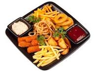

recipe1

this recipe is made with the most effective cheff and available to by on restraunts
main menu
ingridients
- onion
- salad
- spagheti
- salt
- carrot
steps
- Prep the vegetables: Finely chop the onion and carrot, and wash the salad greens.
- Boil the pasta: Bring a pot of water to a boil, add a generous pinch of salt, and cook the spaghetti according to the package instructions until al dente.
- Cook the base: Sauté the chopped onion and carrot in a pan with a little oil until softened.
- Combine and serve: Drain the spaghetti, toss it with your cooked vegetable base, season with additional salt to taste, and serve fresh alongside the salad.